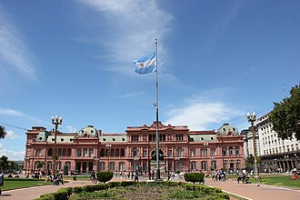

Casa rosada
La Casa Rosada es la sede del Poder Ejecutivo de la República Argentina,
y está ubicada en el centro-histórico de la ciudad capital federativa de Buenos Aires.[1]
Dentro de la misma se encuentra el despacho del presidente de la Nación Argentina y de sus distintas secretarías,
y del jefe de Gabinete de Ministros.
Este edificio se localiza en la calle Balcarce 50, en el barrio de Monserrat en la Ciudad de Buenos Aires,
frente a la histórica plaza de Mayo. Su color característico es rosado y es considerado uno de los edificios más emblemáticos de Buenos Aires.
Alberga además el Museo de la Casa de Gobierno, con objetos relacionados con los presidentes del país.
En 1942 fue declarada Monumento Histórico Nacional.[2

Salón Blanco
El Salón Blanco tiene su piso realizado en roble de Eslavonia, que fuera inicialmente traído desde Bélgica en 1903 y fue restaurado para los festejos del Bicentenario de la Patria, ya que allí y en los contiguos salones Norte y Sur se realizó la cena de gala con la presencia de mandatarios internacionales.
El proyecto y construcción original de este salón es obra del arquitecto Francesco Tamburini. Sus columnas perimetrales de capitel de orden compuesto (jónico-corintio) presentan relieves con motivos grotescos en forma de jarrones, aves quiméricas, hojas de acanto y el Escudo Nacional Argentino.
Del centro del salón pende una araña de bronce sobre dorado, de fabricación francesa y armada en Buenos Aires para su colocación por la casa Azaretto Hnos. Su peso es de 1250 kilos y lleva 192 lámparas. Completan la iluminación numerosos apliques instalados en todo el contorno del salón.
Araña en el Salón Blanco, pesa 1250 kilos y está compuesta por 192 lámparas.
En el techo del salón se observa una pintura sobre tela, obra del artista italiano Luigi De Servi, realizada en 1910 en homenaje al Centenario de la Revolución de Mayo. Esta pintura es una alegoría que conmemora dos momentos clave de la historia de Argentina: La Revolución de mayo de 1810 y el 9 de julio de 1816, día de la Declaración de la Independencia Argentina.
El centro del salón presenta un importante frente ornamental en forma de chimenea, sobre la cual se encuentra emplazada la escultura que representa el busto de la Patria, obra del artista italiano Ettore Ximenes realizada en mármol de Carrara. Arriba del busto sobresale el Escudo Nacional confeccionado en bronce y colocado sobre una placa de mármol de diferentes tonalidades. Coronan este conjunto dos ángeles realizados en madera patinada sosteniendo trompetas de gloria. Esta ornamentación fue comprada a la Casa Forest de París en 1910.
En el ángulo derecho se encuentra el busto del General San Martín, realizado por el artista filipino Félix Pardo de Tavera. El busto del General Manuel Belgrano, situado en el ángulo izquierdo desde 1993, fue realizado por el escultor argentino Juan Carlos Ferraro.
Salón Azul
Ubicado en el subsuelo de la Casa Rosada, en este salón se exponen obras de distintos artistas nacionales en homenaje a diversos estilos y tendencias pictóricas.
La selección de cuadros del salón Azul hace hincapié en los paisajes argentinos que, retratados a través de pintores locales, permiten la representación de un amplio abanico de regiones y provincias.
La colección se despliega por épocas y escuelas. Los salones son arquitectónicamente similares, enlazados por el tono azulino de las paredes, hay ornamentaciones doradas, imponentes arañas y una mesa de madera tallada dorada a la hoja con tablero de mármol (C. 1900) estilo neo-barroco francés Luis XIV.
Sala de Prensa
El 16 de septiembre de 2009 se inauguró el Salón Pensadores y Escritores del Bicentenario, sitio en el que antes se encontraba el Salón de las Artes. El espacio invitaba a honrar a los grandes exponentes de la cultura nacional. Retratos de Raúl Scalabrini Ortiz, Arturo Jauretche, Jorge Luis Borges, Alejandra Pizarnik, María Elena Walsh, Rodolfo Walsh, Enrique Santos Discépolo, Julio Cortázar, Mariano Moreno, Juan Bautista Alberdi, Domingo Faustino Sarmiento, Leopoldo Marechal, Haroldo Conti, entre otros, representaban un homenaje para los hombres y mujeres que forman parte del patrimonio histórico, cultural y político de los argentinos. Este salón se equipó con todo lo necesario para realizar la cobertura periodística de los actos oficiales de gobierno.
A partir de diciembre de 2023, al salón se lo rebautizó como "Sala de Prensa" y pasó a albergar las conferencias de prensa en su totalidad, siendo utilizada generalmente para las conferencias brindadas por el vocero presidencial.[24